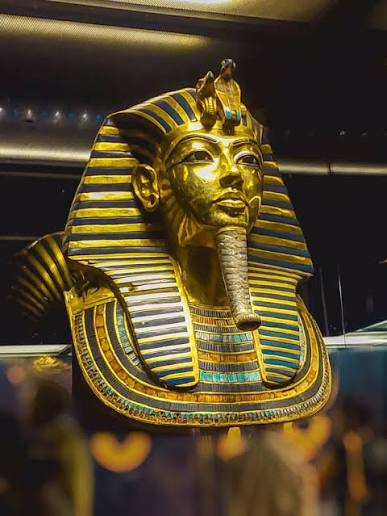

آلاف السنين من العظمة والإبداع
اكتشف المتحف المصري الكبير، واستكشف أسرار الحضارة المصرية القديمة من خلال تجربة رقمية تجمع بين التاريخ والعلم والتكنولوجيا.

ليس مجرد متحف... بل رحلة عبر التاريخ
يُعد المتحف المصري الكبير أحد أبرز المشروعات الثقافية والحضارية في العالم، ويقع بالقرب من أهرامات الجيزة، ليقدم تجربة استثنائية لاكتشاف تاريخ مصر القديمة.
يجمع المتحف بين آلاف القطع الأثرية النادرة، والتصميم المعماري الحديث، وأحدث تقنيات العرض والترميم، ليكون نافذة على واحدة من أعظم الحضارات الإنسانية.
اكتشف تاريخ المتحف ←أرقام تحكي عظمة المكان
حقائق وإحصائيات عن أحد أكبر المتاحف الأثرية في العالم.
0
قاعة عرض رئيسية
0
قطعة من كنوز توت عنخ آمون
0
متر مربع تقريبًا للمشروع
2025
الافتتاح الرسمي
استكشف أركان المتحف
تعرف على أبرز المعالم والمساحات التي تجعل المتحف تجربة استثنائية لعشاق التاريخ والحضارة.
توت عنخ آمون الملك الذهبي
اكتشف عالم الملك الشاب توت عنخ آمون، من قصة حياته واكتشاف مقبرته إلى كنوزه الملكية التي أبهرت العالم.
- القناع الذهبي الشهير
- العروش والمقتنيات الملكية
- العربات والأدوات الشخصية
- الكنوز والمقتنيات الجنائزية

المقتنيات الأثرية
تعرف على روائع الفن والإبداع في مصر القديمة.
حين تلتقي العلوم بالحضارة
كيف تساعد الكيمياء والفيزياء والهندسة والتكنولوجيا في اكتشاف الآثار وترميمها والحفاظ عليها؟
اكتشف عالم الترميممركز المعرفة
مساحة معرفية لفهم التاريخ المصري القديم.
عن ماذا تبحث في المتحف؟
ابدأ رحلتك المعرفية وابحث عن أي موضوع يثير اهتمامك.
هل أنت خبير بالمتحف المصري الكبير؟
اختبر معلوماتك عن تاريخ المتحف وكنوزه الأثرية وتصميمه وأهم مقتنياته، وأثبت أنك من عشاق الحضارة المصرية.
أجب عن الأسئلة واجمع 12 درجة على الأقل لتحصل على شهادتك.